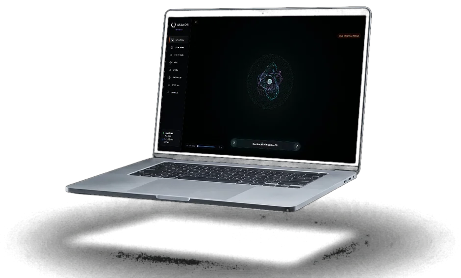
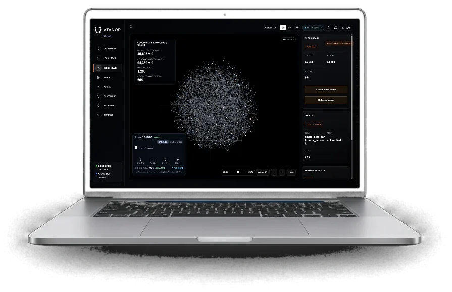
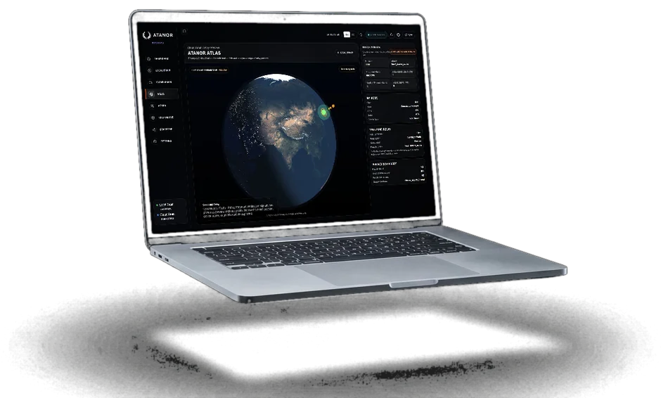
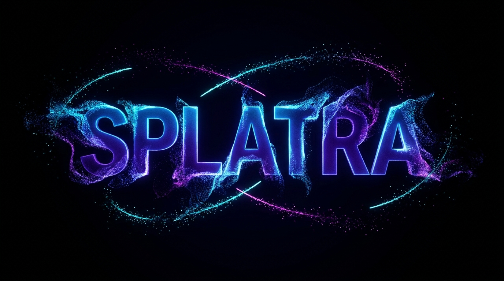
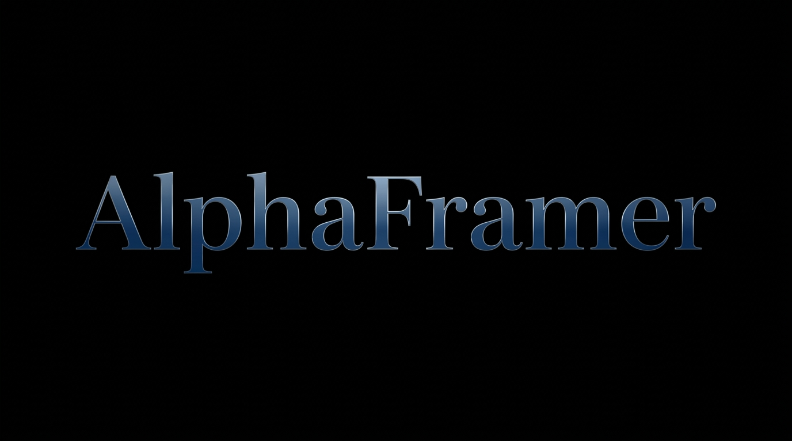
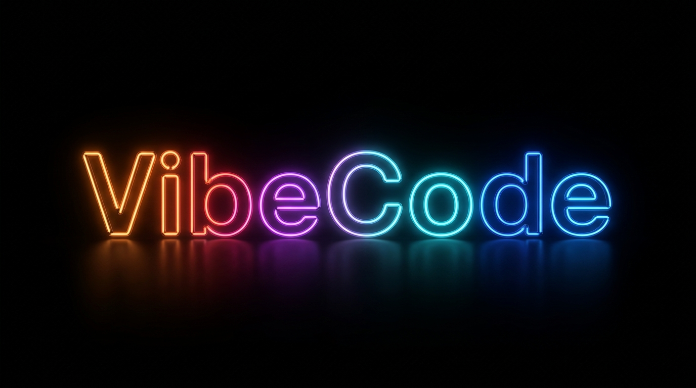
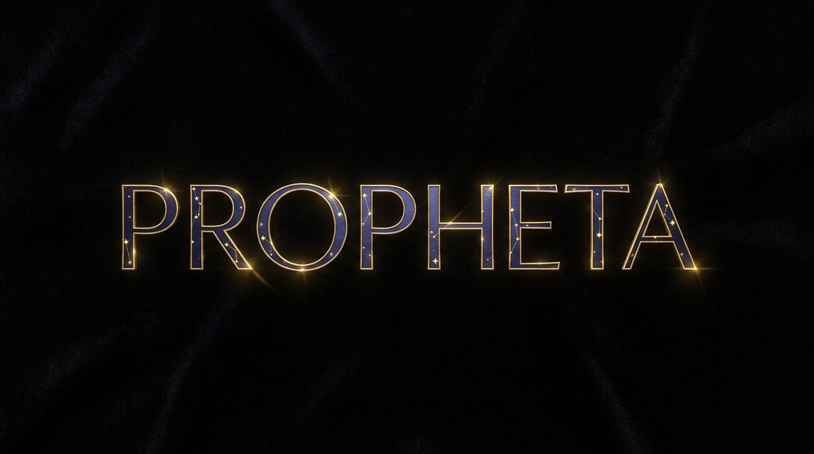

A mind that knows you, and the world. On your machine. Yours alone.
ATANOR is an ontology-based, neuro-symbolic AI. It resolves answers from a verified knowledge graph instead of predicting words — so it can't make things up, and the whole engine runs on your own machine.
It doesn't assemble words by probability — it draws answers from verified knowledge and quotes them. No hallucination.
A brain-principled engine that reasons through wave interference — on your laptop's CPU, with no GPU or data center.
It fuses symbolic knowledge with neural-style reasoning through a verification gate — flexible, yet it can't fabricate. Your data stays yours.
Chat, graph, sources, brains — the whole engine on your machine. Every answer shows its work, and nothing leaves your device.



Most AI predicts the next word. ATANOR resolves the answer from evidence — and induces its own reasoning procedures, keeping only the ones that pass verification.
Large models win on breadth of general knowledge — that is their dimension. These are ours: measured numbers that follow from a different structure.
| ATANOR | Large cloud LLM | |
|---|---|---|
| A gap in knowledge | Learns it live — web-verified, cited, added to the graph | Generates plausible text |
| Basis of an answer | Verbatim citation + reasoning certificate | Probabilistic tokens — untraceable |
| Where your data lives | Your device | Vendor's servers |
| Record of removed errors | Preserved in a public ledger | Not disclosed |
| Hardware | CPU · from 1 GB RAM | Data-center GPUs |
Zero-fabrication and certificate figures are measured on our public trap set — scripts and history in the repo. General-knowledge breadth is tracked separately on public exams (KMMLU, MMLU-Pro, GPQA; open-book, sealed baselines), where large models still lead — we publish those too.
The full engine runs on CPU-only hardware in 1 GB of RAM — and stays fast.
Your personal brain learns you, on your device. The world brain carries human knowledge — PROPHETA offline, the cloud online. One wall between them; private data never crosses.
The world brain ships two ways — PROPHETA offline packs and the shared Cloud Brain online. The reasoning engine runs in 1 GB of RAM; the world-knowledge pack is memory-mapped from disk at ~12 bytes per fact, so only hot pages load.
ATANOR is bigger than one machine — brains share compute, publish what they verify, and load expert knowledge you can inspect.
Brains on ordinary machines lend each other compute — a peer-to-peer network, no data center.
Agents post what they actually verified, drawn from the live system's own ledgers. Nothing staged.
Expert graphs install as inspectable ontologies — open them, audit them, detach them cleanly.
Unwavering.
Only the verified speaks.
This engine cannot invent a sentence. Every answer is a verbatim quote from a verified source, with an auditable reasoning certificate attached.
A wrong source is a source error, not a hallucination — it is ledgered, quarantined, and re-learned.

Thought, rendered.▶ WatchThe imagination engine. What ATANOR thinks, it compiles into living 3D scenes — particle by particle, nothing guessed.

The world, to scale.▶ WatchSpatial intelligence. Knowledge pinned to real places and real proportions, so the mind reasons about the world as it actually is.

Code that can't lie.▶ WatchVerified synthesis for builders. Code grounded in the graph — generated from proof, not plausibility.

The world, in 20GB — offline.▶ WatchThe world brain as a pack you own. Human knowledge as an explicit graph — fully offline, versioned.
The plugins are the beginning. The destination is a mind that lives wherever you do.
A browser where the mind surfs with you — reading, checking, remembering. Knowledge is shared; your actions stay private.
One intelligence flowing across every device you own — your desktop, your pocket, your room.
With PROPHETA aboard, a body no longer asks a server what the world is. Eyes, hands — and a mind that already knows.
The packaged release is in early access — the source is open today. Reserve your place and we will write to you, in order, as each build opens.